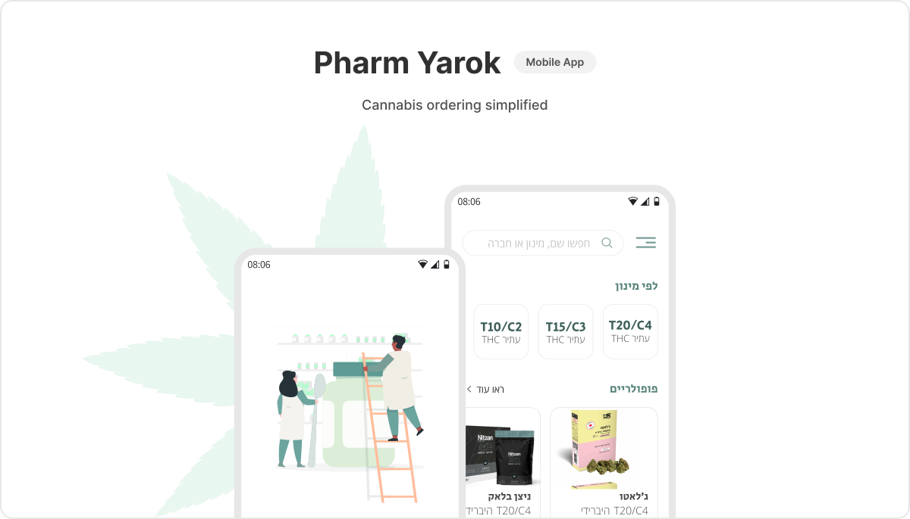
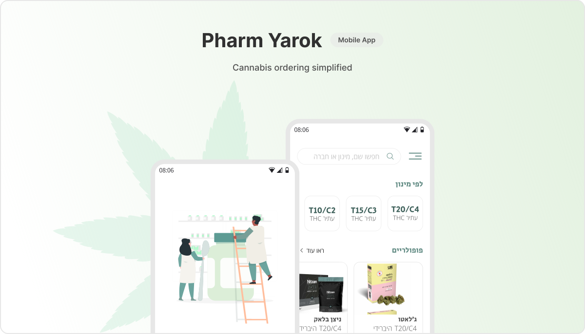
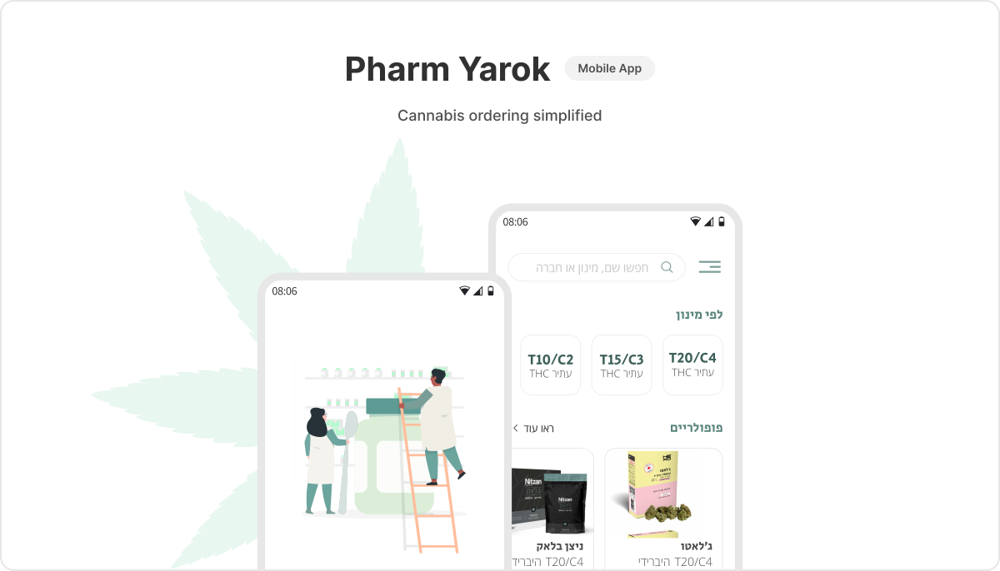
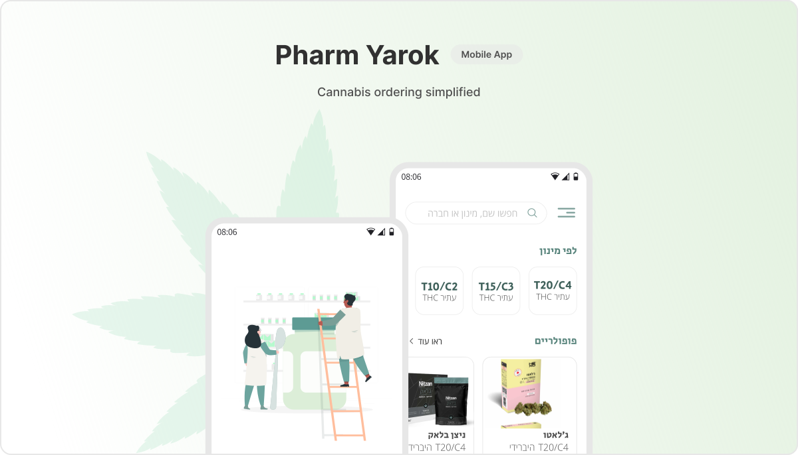

Hi, I'm Hadas
Product Designer
I design systems that make a difference for the Israeli Navy

 



About me
I am a driven, passionate, and eager designer, with 3 years of
experience.
I currently work for the Israeli Navy where
I specialize in complex systems
which is a true passion of mine. I enjoy collaborating with other designers
and developers and learning from them. I'm also a 2nd year psychology student at the Open University.
The knowledge I gain in my studies helps tremendously to understand human
behavior and its flaws and allows me to create better user experiences. Fun Facts Favorite food: Pancakes. Hobbies: working out, baking & making textured art. TV genres: sitcoms, fantasies and dramas. Currently learning: Spanish.
which is a true passion of mine. I enjoy collaborating with other designers
and developers and learning from them. I'm also a 2nd year psychology student at the Open University.
The knowledge I gain in my studies helps tremendously to understand human
behavior and its flaws and allows me to create better user experiences. Fun Facts Favorite food: Pancakes. Hobbies: working out, baking & making textured art. TV genres: sitcoms, fantasies and dramas. Currently learning: Spanish.